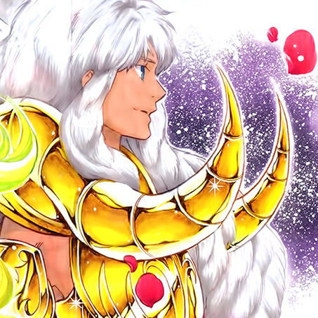

I'll be real with you: I only picked Avenir because he's the only one with an excuse to be around in several different arcs (which all take place some ~250 years and a few dimensions apart) without it being a multi-lifetime-long process. Sure, some of the characters in Saint Seiya reincarnate, but that isn't as funny, so we went with poor Avenir who's a background character in a spinoff of the '80s anime I'm currently into. You see this sheep? He can fit so much trauma in him. He's not my favourite character by a long shot (that honour is tied invariably between Pisces Lugonis, Gemini Aspros, and Pisces Albafica), or even my favourite Aries Saint (tied between Shion and Gateguard). But he fit the first idea I had for this, and I had some fanart, so here we are. All of the captions are in-character. Everything else is not. If you wanted to see Avenir, you're not going to get very far by watching Saint Seiya: The Lost Canvas on Netflix. I mean, you should do that and tell me about it, so I can geek out with someone, but you won't see Avenir - he only shows up in the Gaidens (Sage and Hakurei's shared one, as well as Shion's), and the anime is unfinished and cancelled, which I'm big mad about like everyone else. Dunno what else to say, but I think I proved I didn't mess up the CSS to make his icon do what I wanted it to.
Prof. Hao said "make me a resume / portfolio website" and I went "for like, photography?" and that isn't what he meant, but he let me through the first assignment with a decent enough mark, so I assume I can keep doing that. He would've specified otherwise if he didn't like it and he didn't so I'm probably fine. You can't like... make a tech portfolio website very well. You use a github for that, unless you're making like, games, in which case go throw them up on Steam like the rest of the industry does nowadays. It would've been nice to be allowed any other format, but I won't lie, this was actually pretty fun. I can see myself actually using what I just gained in knowledge in the near future - toyhou.se biographies won't code themselves and I am dissatisfied with what I've been finding for freebies - which is pretty good. And I get to kick myself for coding HTML/CSS for as long as I have and never learning bootstrap until this course, when it would've been so helpful earlier. But that's my own problem.
The code below about the email doesn't actually do anything with the data. I would need a database for that, or at least, better knowledge of javascript, which I'm not actually allowed to use in this assignment besides bootstrap's required code. Its entire and only purpose is because he wants me to have dropdowns, forms, and input groups, which I happily combined so I didn't have to think of more than one in-character excuse. Idk, people like photography mailing lists?
Also, don't ask me how Avenir managed to spot Akemi Homura three whole times. I don't know. Maybe he miscalibrated whatever he's using to time travel because it sure wouldn't be the canon reason (tl;dr Athena did it just before she got decapitated so he could stop her from getting decapitated, because who doesn't love a good ol' paradox?), because that's illogical. If you don't know who Akemi Homura is and want to find out, go watch Puella Magi Madoka Magica, it's on Netflix, do not read the spoilers you'll be sad. They actually do something to your experience watching it, unlike the Avengers which is just a sad cash-grab by the time it was done.
... You know, it's one-thirty in the morning. I procrastinated on this for two and a half weeks and right now my discord status is a crab rave gif and the phrase "procrasti-gramming, dm if needed" and I'm saying this because I want someone to appreciate my puns. And if you're actually reading this as you're marking it, cool hey thanks. :D